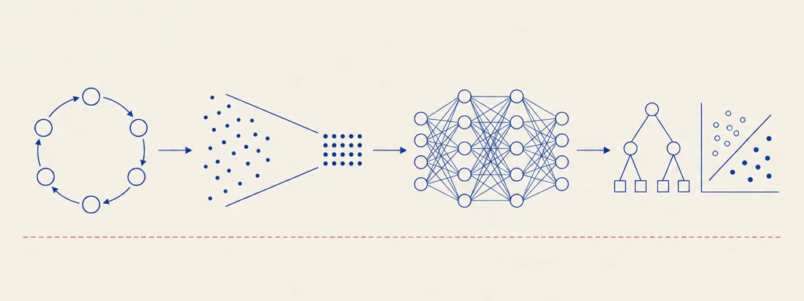

University of Bologna — DISI · Prof. Matteo Francia · A.Y. 2025/2026 · Module 2 (Data Mining)
Machine Learning and Data Mining
11 chapters57 interactive widgets40 plates~7 hours of study

Plate 00 — The road of the course. The CRISP-DM cycle and its foundations (ch. 1), business and data understanding with the case studies (ch. 2–4), data preparation and feature engineering (ch. 5–6), neural networks (ch. 7), and the modeling phase that closes the corpus: the scikit-learn workflow, decision trees, hyperparameter optimization, and the instance-based and neural models (ch. 8–11).
How to study
The chapters are in study order: the first four follow the CRISP-DM cycle, then preparation and feature engineering, then neural networks, then the modeling deck that closes the course. Every chapter consolidates in one place what the lecture deck says about a topic.
The plates are archival technical diagrams reconstructed from the slides: read them as figures, not decoration. The widgets (simulators, boundary explorers, step-through replays) are worked implementations of the mechanisms — use them actively, especially the decision-tree, kNN and perceptron boundary explorers of Chapters 9–11.
Each chapter ends with “Check your understanding”: collapsible exam-style questions with answers in the exact wording of the course. The lecture’s rule is repeated everywhere for a reason: understand the model dynamics, not only the final result — it is mandatory for the exam.
Every chapter footer lists the deck it comes from; sources are the official course slides, not redistributed. Chapter 11 contains one explicit editorial callout about a bug in the deck’s kNN code, grounded in the source.